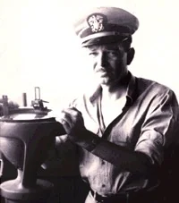
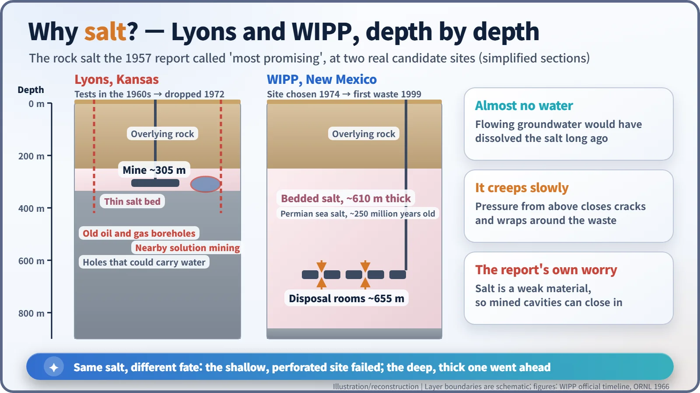
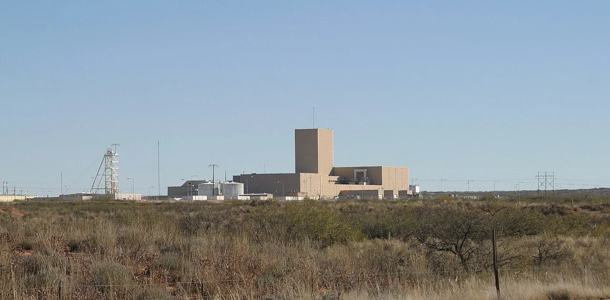
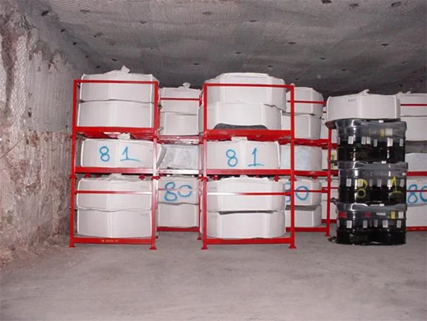
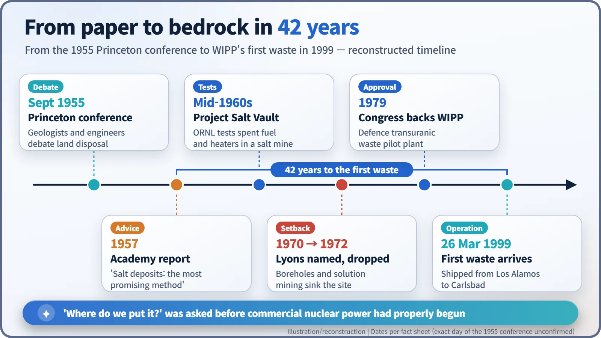

Nuclear History · 224
One Line in a 142-Page Report: "Salt Is the Most Promising" — The 1957 National Academy Report and the Birth of Geologic Disposal
A geologist's committee, a salt mine full of boreholes, and a 42-year road to a repository under the New Mexico desert.
In 1957 a committee of the U.S. National Academy of Sciences, chaired by the geologist Harry Hess, concluded that salt deposits were the most promising place to dispose of high-level radioactive waste. A first attempt in a Kansas salt mine failed over old boreholes, and it took until 26 March 1999 for the Waste Isolation Pilot Plant in New Mexico to receive its first waste, 42 years after the report.
One line in a 142-page report
In 1957 a report appeared in the United States under a plain title: The Disposal of Radioactive Waste on Land. Of its 142 pages, the committee's own report took up only about six; the rest was conference proceedings and appendices. Yet one conclusion in those six pages would steer American waste policy for more than forty years. The U.S. Department of Energy's official timeline for the Waste Isolation Pilot Plant (WIPP) sums it up in a single sentence: the National Academy of Sciences concluded that "the most promising method of disposal of radioactive waste is in salt deposits." [1] [2]
Why salt, of all things? And when did that recommendation on paper become a real facility underground?
Tanks filling with "hot" liquid waste
In the 1950s, the U.S. Atomic Energy Commission (AEC) had a problem that came after the reactor, not inside it. Reprocessing, the chemistry used to extract weapons plutonium from irradiated fuel, left behind acidic liquid loaded with fission products. This is high-level radioactive waste: intensely radioactive, and hot enough to give off heat of its own. At the time it was simply stored in underground tanks at production sites such as Hanford. If power reactors multiplied, so would the waste.
The AEC asked the National Academy of Sciences–National Research Council (NAS-NRC) whether such waste could be disposed of on land. The committee was chaired by the Princeton geologist Harry Hammond Hess (1906–1969). During the Second World War, as captain of the assault transport USS Cape Johnson, Hess had kept the ship's echo sounder running across the Pacific; his soundings later fed into his theory of seafloor spreading. A man who had read the bottom of the ocean was now asked what could safely go under the ground. [6]

A vault that has stayed dry for millions of years
In September 1955 the committee held a conference at Princeton with the cooperation of Johns Hopkins University (the exact day has not been confirmed). Deep disposal, shallow disposal and cavities in salt were all on the table. The answer that emerged was salt.
The logic is elegant. Salt dissolves very easily in water. So if a thick salt bed has survived underground for hundreds of millions of years, that alone is evidence that little or no groundwater has been flowing through it. A DOE presentation quoting the 1957 report puts it this way: "The great advantage is that no water can pass through salt. Fractures are self healing." Deep salt is also slowly squeezed by the weight of the rock above, so it flows, very slowly, in a process called creep. Openings close up, and over time the salt wraps around whatever has been placed inside. Salt was also easy to mine and widespread across the United States. [3]
The report was not blindly optimistic. Because salt is a weak material that flows, it named the main risk as the possibility that mined cavities could collapse over time. It also noted that disposal would be much simpler if the liquid waste could be turned into a solid of relatively insoluble character, an early pointer towards today's practice of locking high-level waste into glass. [1]

Kansas: a salt mine full of holes
The idea moved quickly into the field. In the mid-1960s Oak Ridge National Laboratory (ORNL) ran Project Salt Vault in a salt mine about 305 m (1,000 ft) deep at Lyons, Kansas. Researchers placed irradiated reactor fuel and electrical heaters in the salt to measure how heat and radiation affected the stability of the mine. [4]
In 1970 the AEC announced that, pending confirmatory tests, Lyons would become the first national repository. Problems soon surfaced. Nearby lay old oil and gas boreholes that might not have been properly plugged, and solution mining, which pumps water in to dissolve salt and bring it to the surface, was going on close by. A salt bed chosen precisely because it was dry turned out to be pierced by potential water paths. Critics also pointed out that the salt there was shallow and thin. In 1972 the AEC abandoned Lyons; a later DOE account describes the site as rejected "both politically and technically". [3] [5]
655 metres beneath the New Mexico desert
Hearing about the trouble in Kansas, local politicians in Carlsbad, New Mexico, went the other way and lobbied to host a repository. By August 1972 ORNL had begun studies near Carlsbad, and in 1974 the AEC picked an ancient salt bed 26 miles (about 42 km) east of the town for exploratory work. The bed is about 2,000 ft (roughly 610 m) thick, left behind about 250 million years ago as the Permian Sea evaporated. [2] [3]
In 1979 Congress authorised WIPP as a facility to demonstrate the disposal of radioactive waste from defence activities. Construction was followed by years of certification and litigation; after the Environmental Protection Agency certified the site in 1998, the first shipment, from Los Alamos National Laboratory, arrived on 26 March 1999. That was 42 years after the Academy's recommendation. The disposal rooms lie about 655 m (2,150 ft) down, nearly half a mile below the surface. [2]


Not the waste the report had in mind
One caveat matters. WIPP takes defence transuranic waste: gloves, tools, clothing and debris contaminated with plutonium and other elements heavier than uranium. A 1992 law explicitly bans high-level waste and spent nuclear fuel from the site. The "hot" liquid waste the 1957 report had in mind still needed a different answer. And in February 2014 an underground radiological release halted disposal until January 2017, a reminder that a deep repository still has to be managed with care. [2]

The people who asked "where?" first
The lasting value of the 1957 report lies less in its answer than in when it asked the question. Commercial nuclear power was barely taking its first steps, yet geologists were already thinking about where waste could be kept away from people for a very long time. Today's concept of geologic disposal, using the natural properties of deep rock as a barrier and layering engineered barriers on top, starts here. In later decades the candidate rocks would widen from salt to volcanic tuff and hard crystalline bedrock, but that is another story.